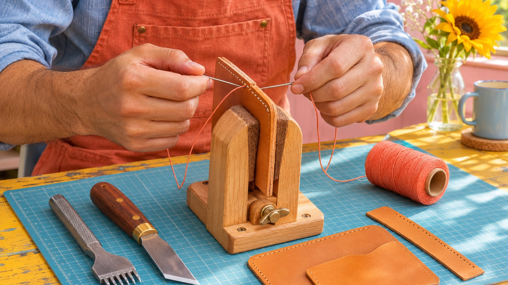
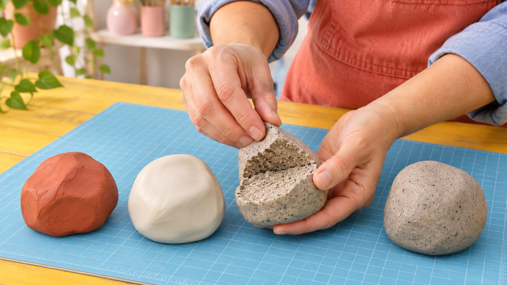

總長4 小時 20 分
總長4 小時 20 分
設計 Guideline
童心啟蒙樂園的色彩、字級、間距、貼紙語彙與元件狀態。
一本會動的闖關繪本大圓播放鈕、闖關小徑、通關勳章
概覽
這套風格從哪裡來、
- 色系搭配
淺色系 ＋ 繽紛暖色（向日葵黃、天空藍、珊瑚橘）
- UI 視覺特點
大圓角播放按鈕、闖關地圖式章節清單，進度完成時帶有可愛勳章動畫。
- 概念
- 一本會動的闖關繪本：向日葵黃與天空藍的貼紙卡片、大大的圓形播放鈕，每完成一關就拿到一枚勳章，讓「把作品做完」變成一路蓋章的冒險。
- 對象
- 學員是上班族成人。CONTENT.md 的人物與文案一字不改，「童心」只是語氣與視覺的輕鬆：不加卡通角色、不加注音、不加語助詞。
- 技術
- Bootstrap 5.3＋Sass（只用 sass CLI 編譯），單一淺色主題；互動交給
data-bs-*，自己寫的只有js/main.js的六個小功能。
四個原則
大膽只花在三處大圓播放鈕、闖關小徑、通關勳章。其他地方用同一套貼紙語彙，不另外發明裝飾。
貼紙語彙白底、2px 墨框、28px 圓角、4px 墨色硬陰影。全站沒有任何模糊陰影。
亮色只當填色向日葵、天空、珊瑚、葉綠上面一律墨字，外面一律墨框；文字要用顏色時改用深色。
可愛不碰嚴謹的地方價格、表單、付款結果照一般規格排；含表單或長文字的卡片不轉、不加裝飾。
10 個頁面與各自的招牌
首頁
index.html拱門主圖＋跨在拱門底緣的 120px 大圓播放鈕、斜貼的正在播放貼紙；下面是高低錯落的色塊泡泡、4 個圓形工藝舷窗、淡天空色帶上的熱門課程。
課程列表
courses.html「選關卡」色板：8 個分類大方塊＋難度、價格粗膠囊與排序；下面是橫式課程卡（≥ 1200px 2 欄），分頁是大圓鈕。
課程詳情
course.html電視機播放器放在 H1 上面，8：4 版面；闖關小徑大綱、講師與評價貼紙卡，右側 sticky 購買卡頂端是珊瑚價格緞帶。
課程播放／學習頁
learn.html電視機播放器＋續看提示、56px 圓形上一個／下一個、粗膠囊分頁；右側 sticky 進度卡與小徑章節側欄。
註冊
register.html760 寬的白色表單卡，右上角斜貼一張「課程票」貼紙；表單卡本身不轉。
購買課程
checkout.html最上方一條橫向課程貼紙；7／5 版面，3 張大付款選項卡，右欄向日葵總金額貼紙與確認付款。
付款結果
order-result.html通關畫面：120px 勳章載入時 pop 一次，鋸齒邊收據＋「接下來」3 站迷你地圖。
我的課程
my-courses.html3 個色塊泡泡統計、粗膠囊篩選；課程卡疊一個 96px 甜甜圈進度，已完課換成勳章。
購買紀錄
orders.html5 張鋸齒邊收據貼紙（2 欄），狀態 chip 都有圖示；最下方是 7 天不滿意退費說明。
設計 Guideline
guideline.html本頁左 3 欄 sticky 小徑目錄、右 9 欄每節一張貼紙卡；手機改成頂端橫向捲動的站牌列。
色彩
奶油底、白色貼紙、墨色外框。
色票旁的數字是 WCAG 2.x 對比度：文字對底色至少 4.5，圖示、外框與焦點環至少 3。色碼都來自 scss/_variables.scss，頁面的 SCSS 只引用變數。
兩條鐵則
- 珊瑚底一律墨字：墨字對珊瑚 6.31，白字只有 2.31，不及格。
- 亮色對奶油底都不到 3:1（向日葵 1.48、天空 1.81、葉綠 1.66），所以卡片、按鈕、輸入框、chip 一律有 2px 墨框，靠外框看出邊界。
底色
奶油
$cream#FFFBEF頁面底色、示範舞台、停用按鈕與輸入框的底
墨字 14.12、淡墨 6.82
白
$white#FFFFFF貼紙卡、輸入框、對話框；播放器上的時間碼
墨字 14.60、淡墨 7.05
淡色區塊
淡向日葵
$sun-soft#FFF3C4首頁色帶、hover 底、便條、表格標題列
墨字 13.12、淡墨 6.34、深天空 4.84
淡天空
$sky-soft#D9EEFC頁尾、進度軌道、播放中的單元列、元件 hover
墨字 12.23、淡墨 5.91、深天空 4.51
淡珊瑚
$coral-soft#FFE3D8淡珊瑚區塊、願望清單愛心圓章
墨字 11.98（深珊瑚只有 4.43，這個底上一律墨字）
淡葉綠
$leaf-soft#E6F6E7成功底：7 天退費提示、完課日期
墨字 13.01、深葉綠 5.42
淡番茄
$tomato-soft#FFF0EA錯誤底：載入失敗、欄位錯誤、付款失敗
墨字 13.15、番茄 4.90
墨（文字、外框、陰影）
墨
$ink#2D2440主文字、所有外框、硬陰影、播放器機身
白底 14.60、奶油 14.12
淡墨
$ink-2#5E5470meta、說明、停用文字；播放器進度軌道
白底 7.05、奶油 6.82
placeholder
$placeholder#6E6580輸入框的 placeholder
白底 5.47、奶油 5.29
亮色（只當填色，上面放墨字）
向日葵
$sunflower#FFC93C頁首色帶、播放鈕、勳章、選中的分類方塊
墨字 9.51；當圖形對奶油只有 1.48
天空
$sky#7CC6F2播放鈕外圈、目前章節、選中的分頁與付款卡
墨字 7.80；當圖形對奶油只有 1.81
珊瑚
$coral#FF8A65主要按鈕、價格緞帶
墨字 6.31；白字只有 2.31，禁止
葉綠
$leaf#8FD694已完成站牌、已完課 chip、已上架
墨字 8.49
珊瑚亮一階
$coral-hover#FFA285主要按鈕 hover（變亮，不是加深）
墨字 7.48
可當文字的深色
深天空
$sky-deep#1F6FA8連結、文字按鈕、進度條填色、焦點環
白底 5.39、奶油 5.21；對向日葵 3.51
深珊瑚
$coral-deep#B9431F價格、強調文字
白底 5.40、奶油 5.22、淡向日葵 4.86
深葉綠
$leaf-deep#1E7041成功文字、已付款、單元的完成勾
白底 6.09、奶油 5.88、淡葉綠 5.42
番茄
$tomato#C0392B錯誤文字、錯誤圖示、付款失敗
白底 5.44、奶油 5.26、淡番茄 4.90
深琥珀
$amber-deep#8A5A00警示文字、退費處理中
白底 5.93、淡向日葵 5.33
語意色
| 語意 | 色彩 | 用在 | 對比度 |
|---|---|---|---|
| 成功／已完成 | $leaf 填色＋$leaf-deep 文字（$success） | 已完成站牌、已完課 chip、已付款、7 天退費提示 | 葉綠上墨字 8.49；深葉綠對白 6.09 |
| 警示 | $amber-deep 文字＋$sun-soft 底（$warning） | 退費處理中 | 淡向日葵上 5.33 |
| 錯誤 | $tomato 文字與框＋$tomato-soft 底（$danger） | 影片載入失敗、欄位錯誤、付款失敗 | 淡番茄上 4.90；白底 5.44 |
| 資訊／連結 | $sky-deep（$primary、$info） | 連結、文字按鈕、進度條、核取方塊、焦點環 | 白底 5.39；奶油 5.21 |
影音專用
| 元素 | 色彩 | 對比度 |
|---|---|---|
| 播放器機身、控制列底 | $tv＝$ink #2D2440；畫面底黑色 | 白色時間碼 14.60、向日葵圖示 9.51 |
| 控制鈕 hover 底 | $tv-soft #43395A＋向日葵框 | 向日葵圖示 6.93、白 10.65 |
| 進度軌道 | $tv-track＝$ink-2 | 和機身之間靠高度與圓角分開 |
| 已播放 | $sunflower | 對軌道 4.59、對機身 9.51 |
| 已緩衝 | 白 35% 疊在軌道上 | 對軌道 2.29（輔助資訊；位置由播放頭標示） |
| 已觀看位置標記 | $sky 圓點＋墨框，tooltip「上次看到 07:18」 | 對軌道 3.77 |
| 播放頭 | 白圓＋3px 墨框＋向日葵外圈 | 白對軌道 7.05 |
| 播放器上的焦點環 | $sunflower 3px（深天空對墨只有 2.71，所以換色） | 對機身 9.51 |
| 試看 | .chip-trial：向日葵＋解鎖圖示 | 墨字 9.51 |
| 鎖定 | 單元列是鎖頭圖示＋只給螢幕報讀器的「鎖定」；.chip-lock（白底虛線框＋鎖頭、淡墨字）已定義，頁面目前沒有用到 | 淡墨對白 7.05 |
| 播放中 | .chip-playing：天空＋播放圖示；單元列淡天空底＋墨框 | 墨字 7.80、淡天空上 12.23 |
Bootstrap 變數對照
| 變數 | 對應 | 注意 |
|---|---|---|
$primary | $sky-deep | 連結、進度條、勾選框、分頁的選中。.btn-primary 另外改成珊瑚底墨字；.text-primary、.bg-primary 仍是深天空 |
$secondary | $ink-2 | .btn-secondary 另外改成白底墨框墨字 |
$success／$info | $leaf-deep／$sky-deep | 表單驗證成功色用深葉綠 |
$warning／$danger | $amber-deep／$tomato | 表單錯誤色用番茄 |
$light／$dark | $sun-soft／$ink | 單一淺色主題（$enable-dark-mode: false） |
字級階層
中文全部用圓體，
真為手感
Chiron GoRound TC（圓體）
所有中文：標題、內文、按鈕、表單。「真」「為」是台灣標準字形。
500 手感700 手感800 手感900 手感
07:18
Baloo 2（英數）
品牌字 Craftory、價格、百分比、時間碼、單元編號。一律加 .num（等寬數字 tabular-nums）。
600 NT$ 2,480800 NT$ 2,480
階層（桌機 ≥ 992px／手機）
把想學很久的
探索課程
為什麼在 Craftory
從零開始的手捏陶｜
第 3 章 手捏成形：從土球到碗
下班後一天看一支，兩週後家裡真的多了一個自己捏的碗，很有成就感。
7 天內觀看未逾 20%，可全額退費。
3-2 07:18 / 11:24 50%
NT$ 2,480
NT$ 2,480
Craftory
間距
間距尺度改過：.mb-6。
間距尺度 $spacers
14px
28px
316px
424px
532px
648px
764px
896px
固定用法
| 位置 | 數值 | 變數或類別 |
|---|---|---|
| 版心 | 最大 1240，左右內距各 20 | $container-max-widths、$container-padding-x: 2.5rem |
| 欄距 | 32 | $grid-gutter-width: 2rem |
| 區塊上下留白 | 桌機 96、手機 64 | .section |
| 區塊標題列下方 | 桌機 40、手機 32 | .section-head |
| 內頁上方 | 48＋頁首波浪 12 | .page-top（首頁不加） |
| 頁首 | 高 76＋波浪 12（波浪不佔版面高度） | $site-header-height、$site-header-wave |
| sticky 位移 | 104＝76＋12＋16：購買卡、學習頁側欄、購買課程右欄、本頁小徑目錄 | $sticky-top-offset、var(--sticky-top) |
| 錨點位移 | 104（點目錄、點「看看課程包含什麼」都不會被頁首蓋住） | html 的 scroll-padding-top |
| 卡片內距 | 購買卡 24（576px 以下左右 20）；課程大綱 32；本頁章節卡 20／32／40 | 寫在各頁 partial |
圓角與陰影
圓角很大、外框很粗、
圓角
20｜
$radius-input、$radius-image輸入框、select、圖片、播放器畫面、本頁表格28｜
$radius-card貼紙卡、對話框、播放器機身、手風琴膠囊｜
$border-radius-pill按鈕、chip、導覽、搜尋框、分頁籤圓形大播放鈕、站牌、頭像、區塊徽章、圓形按鈕、分頁大圓鈕
拱門首頁主圖：上緣半圓、下緣 28
$border-radius-sm 12 與 $border-radius-xxl 40 是 Bootstrap 的備用值，10 個頁面目前沒有用到。
陰影：只有硬陰影
3px｜
$shadow-hard-sm按鈕、站牌、圓形按鈕、Toast、選中的分頁籤4px｜
$shadow-hard貼紙卡、選中的分類方塊、目前分頁大圓鈕6px對話框（登入、鎖定提示）
filter: drop-shadow4px鋸齒收據，陰影跟著鋸齒走
停用與鎖定沒有陰影，外框改虛線。按鈕按下時往右下沉 3px、陰影變 0，看起來像貼紙被壓平。
焦點環
一般：3px 深天空、間隔 3px
播放器上：向日葵
旋轉（只給小貼紙）
.tilt-l −2°.tilt-r-sm 1.5°.tilt-r 2°正在播放、課程票、勳章、拍立得、收據可以轉；含表單或長文字的卡片不轉。唯一的大卡例外是我的課程的 3 張課程卡（≥ 992px 左右兩張轉 ∓1.5°、中間那張往下錯開）。576px 以下一律不轉。
招牌元素
大圓播放鈕、闖關小徑、
大圓播放鈕 .play-orb
向日葵圓＋3px 墨框，外面一圈天空、一圈墨框、再一層硬陰影；外圈都畫在 box-shadow 裡，不佔版面。尺寸用 --orb 控制，外圈寬度是它的 10%。
120｜首頁主圖（≥ 992px）
112｜播放器（≥ 768px）
88｜首頁主圖（< 992px）
72｜播放器（< 768px）
預設
hover：向日葵變亮
focus-visible：焦點環在外圈外
闖關小徑 .trail
一條直向的墨色虛線，章節是圓形站牌，單元是小徑旁的小石頭。小徑一律是直線：Accordion 展開會改變高度，蜿蜒路徑會對不齊（只有付款結果固定高度的迷你地圖是蜿蜒的）。
站牌 .trail-sign（48px；.trail-sign-sm 36px）
預設＝未開始
白底＋章號
.is-trial含試看的章向日葵＋章號（課程詳情第 1 章）
.is-current目前章節天空＋章號（學習頁第 3 章）
.is-partial進行中下半葉綠，旁邊一定寫完成數 2／4
.is-done已完成葉綠＋勾（課程詳情的已購買狀態）
.is-medal已完成（學習頁）向日葵＋小勳章
小石頭 .trail-stone（單元）
- 預設＝未開始白底空心
.is-trial試看向日葵.is-done已完成葉綠.is-locked鎖定虛線框
狀態不只靠顏色：站牌有章號或圖示＋只給螢幕報讀器的文字，單元列有 chip 或圖示。兩種章節清單的實際樣子見「元件狀態規範」的單元列。
通關勳章 .medal
向日葵圓牌＋墨框＋白色星星＋珊瑚與天空兩條緞帶。整枚勳章是裝飾（aria-hidden），意思由旁邊的文字說明；SVG 照 components/_medal.scss 開頭的註解原樣複製。
.medal-sm 72｜學習頁完成一章
.medal-md 96｜我的課程已完課
120｜付款結果、首頁 CTA
動畫示範區
這枚勳章是 .medal-animate-view：捲進畫面的那一段 pop（只動大小與角度），接著一道光澤掃過、四顆小星星閃一下，整枚進到畫面時已經播完，停在畫面下緣也不會半透明；往回捲再捲下來會重播。不支援 animation-timeline: view() 的瀏覽器是靜態勳章。
- 0%：縮小、半透明
- 60%：放大到 108%
- 100%：回到原尺寸
| 寫法 | 什麼時候播 | 用在 |
|---|---|---|
.medal-animate | 載入時播一次：pop 700ms（$ease-pop），650ms 起光澤 650ms，500ms 起小星星 900ms | 付款結果、本頁標題旁的貼紙 |
.medal-animate-view | 跟著捲動：進入畫面 10%～35% 之間 pop | 學習頁的完成一章、全課完成；我的課程的已完課卡 |
| 不加 | 靜態 | 首頁 CTA 色帶、本節上方的尺寸示範 |
減少動態效果：作業系統開啟「減少動態效果」（prefers-reduced-motion: reduce）時，_base.scss 統一關掉所有 animation 與 transition。勳章直接顯示最終樣子，沒有縮放、光澤與小星星；動畫只動 transform 與 opacity，盒子尺寸固定，所以關掉後版面完全一樣。
貼紙語彙
.sticker
白底、2px 墨框、28px 圓角、4px 硬陰影。基本卡。
.sticker-strip.is-sky
頂部 12px 淡色條＋墨色下邊線；同一區塊輪流用 is-sun、is-sky、is-coral。
.receipt
- 金額
- NT$ 2,480
- 付款方式
- 信用卡（末四碼 4242）
圓弧波浪：頁首下緣、首頁色帶上下緣。@include scallop(色, top|bottom, 半徑) 畫在色帶的 ::before／::after。
圓形色塊 .deco-dot（--d 直徑、--c 顏色），放在 overflow: hidden 的區塊角落。
元件狀態規範
hover、focus、按下都用固定樣子畫出來，
標「hover」「focus-visible」「按下」的元件加了本頁專用的 .gl-hover、.gl-focus、.gl-press，只是把狀態固定住給你看；其他元件都可以實際操作。
按鈕
珊瑚底一律墨字。主要按鈕是珊瑚底墨字（6.31），hover 換成亮一階的珊瑚 #FFA285（7.48），是變亮不是加深；白字只有 2.31，任何珊瑚底都不放白字。
主要 .btn-primary
預設
hover
focus-visible
按下
停用
處理中
次要 .btn-secondary
預設
hover
focus-visible
按下
停用
色塊 .btn-sun、.btn-sky（_base.scss 已定義，9 個頁面目前沒有用到，保留給色帶或深色區塊）
向日葵
向日葵 hover
天空
天空 hover
文字連結 .btn-text、.link-more；圓形按鈕 .round-btn
預設
hover
focus-visible
按下
向日葵／天空／珊瑚
文字連結與圓形按鈕沒有停用樣式：不能用的操作直接不顯示（例如第 1 個單元沒有「上一個」）。
播放器控制鈕 .player-btn（深色機身上）
預設
hover／選單開啟
focus-visible：向日葵
主要（播放／暫停）
播放器控制鈕常駐顯示，沒有停用樣式；焦點環在深色機身上改成向日葵。
「免費試看」與「立即購買」的層級
課程卡：只有一顆次要按鈕
NT$ 2,480
免費試看
購買卡：一個主要、一個次要
免費試看的門檻要低於立即購買：課程卡上不放購買，只有「免費試看」（連到 course.html#trial）；課程詳情把試看播放器放在 H1 上面，先看到影片，才看到右側購買卡。
表單
2px 墨框、20px 圓角、白底；focus 是 3px 深天空外框（間隔 2px）；停用是奶油底＋淡墨虛線感的框；錯誤是番茄框＋欄位下方番茄字錯誤訊息＋驚嘆號圖示，以 aria-describedby 連到欄位。
輸入框（電子郵件）
預設
focus
停用
錯誤
多行文字（課程問答）與 select（排序）
預設
focus
停用
錯誤（本頁示意文字）
預設
focus
停用
排序一定有預設值（最新上架），沒有錯誤狀態。
checkbox：難度、價格的粗膠囊 .courses-pill
未選
選中
hover
focus-visible
停用
radio：工藝分類的大方塊 .courses-tile
未選
選中
hover
focus-visible
停用
選中＝向日葵底＋硬陰影＋右上角的勾，不只靠顏色。課程列表目前沒有停用的選項，停用樣子先定好（虛線淡墨框、奶油底）。
一般勾選框（同意條款）
預設
錯誤
分頁籤、切換、手風琴與分頁
粗膠囊分頁籤 .nav-pills-bold（可以實際切換）
本段重點是拇指下壓時維持約 45 度，底部厚度保留 0.8cm。壓太快會讓底部變薄，入窯容易裂。
這個單元還沒有人提問，當第一個吧。
- 新手工具採購清單.pdf（0.4 MB）
- 釉色對照表.pdf（2.1 MB）
- 代燒窯場聯絡名單.pdf（0.3 MB）
未選
hover
focus-visible
選中：天空底墨字
切換 .segmented
選中＝天空底＋硬陰影（可以實際切換）
未選的 hover
分頁 .courses-pagination
停用、目前頁、hover、focus-visible
手風琴（常見問題 .course-faq）：展開、收合
可以，這堂課就是為第一次碰土的人設計的。
永久觀看，課程日後更新的單元也會一併開放。
課程卡 .course-card
整張卡用 .stretched-link 連到課程詳情，「免費試看」按鈕疊在上面。hover 與 focus 只把整張卡換成淡向日葵底、課名加底線，不放大、不位移。
-
預設
總長4 小時 20 分
-
hover
總長4 小時 20 分
-
focus-visible（鍵盤移到課名）
總長4 小時 20 分
橫式 .course-card-row（課程列表，≥ 768px）

總長3 小時 05 分工藝情境卡（首頁的圓形舷窗 .craft-porthole）
「12 門課」與「最短 4 小時 20 分完課」所有寬度都常駐顯示。hover 只把舷窗外圈換成淡向日葵、作品名稱加深天空底線。

單元列（兩種章節清單）
單元列是 .trail-unit：編號 → 名稱＋狀態 chip 或圖示 → 片長。hover 淡向日葵底；播放中的那列淡天空底＋墨框，並加 aria-current="true"。
課程詳情（未購買）：試看、播放中、鎖定
1-3 固定成 hover 的樣子；點 1-4 會開啟鎖定提示。已購買時章節站牌換成 .is-done、單元換成已完成的勾，見課程詳情的狀態示意。
學習頁 .is-compact：已完成、播放中、未開始
窄側欄的單元小石頭直接落在小徑上：葉綠實心＝已完成、天空圈＝播放中、空心＝未開始，勾與圓圈只留給螢幕報讀器。學習頁可以同時展開多章（沒有 data-bs-parent）。
徽章 .chip
膠囊、2px 墨框、墨字；狀態類 chip 一律搭配圖示，不只靠顏色。.chip-lock 已定義但頁面目前沒有用到（鎖定單元用鎖頭圖示）；講師課程狀態的三個 chip 只在本頁。
單元與學習
試看
鎖定
已完課
學習進度 78%
學習中
分類、難度、時長
陶藝
入門
進階
總長 4 小時 20 分
4 小時 20 分
12 門課
講師課程狀態
草稿
已上架
已下架
訂單狀態
已付款
退費處理中
付款失敗
已退費
學習進度、評價分佈與星等
你的學習進度
已完成 14／28 單元 ‧ 50%預估還需 2 小時 10 分
進度條：淡天空軌道、深天空填色（4.51）、2px 墨框；旁邊一定有文字。
星等
.stars、評分 .rating
播放器 .player 與續看提示
電視機外框：墨色機身、天線、喇叭孔與兩顆旋鈕。控制列常駐顯示，不靠 hover 才出現；速度與字幕選單可以實際打開。
未播放（課程詳情預設）：大圓播放鈕＋覆蓋文字

免費試看｜第 1 章 ‧
播放中（學習頁預設）：已播放、緩衝、上次看到的標記、播放頭；續看提示 Toast（≥ 768px 貼在畫面左上，手機在播放器下方，可以關掉）
已為你跳到上次觀看的 07:18，
載入中：畫面中央一圈向日葵虛線轉動（減少動態效果時停住）
載入中
載入失敗：畫面換成淡番茄錯誤貼紙＋重新載入（576px 以下畫面跟著內容長高）
影片暫時無法播放，請檢查網路後重新整理。
購買卡 .course-buy
頂端一條珊瑚價格緞帶（墨字），一個主要按鈕、一個次要按鈕；願望清單按下後換成實心愛心＋「已加入願望清單」，按鈕寬度不變。課程詳情 ≥ 992px 且視窗高 ≥ 680px 時 sticky。
未購買
NT$ 2,480
購買包含
- 28 支教學影片
- 永久觀看
- 課程問答區
- 可下載材料清單 PDF
7 天內觀看未逾 20%，可全額退費。
已購買：主要按鈕改「繼續上課」，不顯示價格
對話框與空狀態
對話框是 28px 圓角白色貼紙、6px 硬陰影，遮罩是 55% 的墨色。下面三顆按鈕會開啟真的對話框；靜態畫面與 Notion 文案放在下一節。
空狀態 .empty-state
88px 淡向日葵圓形圖示 → 一句說明（Notion 原文）→ 最多一個動作，置中、不加框。4 則用到空狀態的文案都在下一節。
狀態與空畫面文案
Notion 的 7 則狀態文案，
未登入點擊購買
登入後就能開始上課，馬上註冊只要 30 秒。
登入對話框的提示列 .auth-notice。課程詳情的「立即購買，開始上課」、註冊頁的「登入」用購買情境開啟（data-auth-context="purchase"），主要按鈕換成「登入並開始上課」。
未購買點擊鎖定單元
這個單元需要購買課程後觀看。［看看課程包含什麼］
鎖定提示對話框。課程詳情點鎖定單元時開啟；按鈕關閉對話框並捲到購買卡（data-dismiss-to="#purchase"）。
我的課程為空
你還沒有進行中的課程，先從一支免費試看開始。［探索課程］
空狀態。我的課程、學習頁的狀態示意「還沒有任何課程時」。
你還沒有進行中的課程，先從一支免費試看開始。
探索課程課程列表篩選無結果
這個條件下目前沒有課程，試著放寬難度或價格範圍。
已選條件列＋空狀態（加「清除篩選」）。課程列表的狀態示意「篩選沒有結果時」。
這個條件下目前沒有課程，試著放寬難度或價格範圍。
影片載入失敗
影片暫時無法播放，請檢查網路後重新整理。［重新載入］
播放器的錯誤畫面 .player-error（完整播放器見上一節）。學習頁的狀態示意「影片載入失敗時」。
影片暫時無法播放，請檢查網路後重新整理。
講師課程草稿未完成、已下架（6、7）
這門課還缺少課程封面與售價，補齊後就能上架。
這門課目前已下架，已購買的學生仍可繼續觀看。［重新上架］
講師課程狀態卡，只在 Guideline。元件示意，與前台課程的上架狀態無關。
-
草稿
植鞣皮革入門｜
縫一只用十年的卡夾 這門課還缺少課程封面與售價，補齊後就能上架。
-
已上架
從零開始的手捏陶｜
做出第一只日用食器 -
已下架
銀飾鍛敲入門｜
從一條銀線到一只戒指 這門課目前已下架，已購買的學生仍可繼續觀看。
三種狀態用 chip 的文字與圖示、外框（草稿是虛線、無陰影）與底色區分，不只靠顏色。
其他動態文案
完成一章時（學習頁狀態示意）
第 2 章完成了，土已經揉好，接下來進入最有趣的成形。
全課完成時（學習頁狀態示意）
| Notion 文案 | 畫在哪裡 |
|---|---|
| 續看提示：已為你跳到上次觀看的 07:18，［從頭播放］ | 學習頁預設顯示；本頁「元件狀態規範」的播放中播放器 |
| 課程問答空狀態：這個單元還沒有人提問，當第一個吧。 | 學習頁「課程問答」分頁；本頁的分頁籤示範 |
| 已購買者的章節（已完成的勾選狀態） | 課程詳情的狀態示意「已購買時」 |
| 安心提示：7 天內觀看未逾 20%，可全額退費。 | 購買卡（淡葉綠 .course-buy-note）、註冊、購買課程、付款結果 |
| 購買包含：28 支教學影片 ‧ 永久觀看 ‧ 課程問答區 ‧ 可下載材料清單 PDF | 購買卡、購買課程的課程貼紙 |
動態與 hover
會動的只有勳章、載入圈與按下的按鈕；
- hover 與 focus 只換文字色、底色、外框色或加底線；不位移、不放大、不改尺寸、不浮現隱藏的資訊。資訊一律常駐顯示。
- 按鈕
:active往右下沉 3px、硬陰影變 0：只是 transform，盒子尺寸不變，不推擠旁邊的東西。 - 鍵盤焦點一律看得到：3px 深天空外框、間隔 3px；播放器上改成向日葵。
- 不為動畫另外寫 JS；
js/main.js只有六個小功能。
會動的東西
| 動態 | 時間 | 減少動態效果時 |
|---|---|---|
| 勳章 pop＋光澤＋小星星 | 700ms＋650ms＋900ms，只播一次（.medal-animate）；或跟著捲動（.medal-animate-view，勳章從畫面下緣進場到整枚露出的這段捲動裡播完，只動 transform） | 直接顯示最終樣子 |
| 播放器載入中的虛線圈 | 2.4 秒一圈，載入期間持續 | 停住 |
| 按鈕按下 | 150ms 往右下 3px | 不位移 |
| hover 換色 | 按鈕 150ms、其他 200ms（$transition-base） | 直接換色 |
| 錨點平滑捲動 | html { scroll-behavior: smooth } | 直接跳到 |
正在播放貼紙的三根小直條是靜態的；首頁 CTA 的勳章也是靜態。
各元件的 hover 與 focus
| 元件 | hover | focus-visible |
|---|---|---|
.btn-primary | 珊瑚 → 亮珊瑚 #FFA285 | 深天空外框＋3px 硬陰影 |
.btn-secondary | 白 → 淡向日葵 | 同上 |
.btn-text、.link-more | 深天空字 → 墨字，底線換向日葵 | 深天空外框 |
.course-card | 整張淡向日葵＋課名底線 | 同 hover（:focus-within）＋課名外框 |
.craft-porthole | 舷窗外圈 → 淡向日葵，作品名稱深天空底線 | 同 hover＋外框 |
.trail-unit、.nav-pills-bold | 淡向日葵底；章節標題加底線 | 深天空外框（手風琴畫在內側） |
.courses-tile、.courses-pill | 淡天空底 | 深天空外框 |
.player-btn | 機身亮一階 #43395A＋向日葵框 | 向日葵外框 |
.play-orb | 向日葵變亮 | 外框畫在天空外圈之外 |
| 本頁小徑目錄 | 站牌淡向日葵＋站名底線 | 深天空外框；目前章節（ScrollSpy）站牌換天空、站名淡天空底 |
RWD 斷點
Bootstrap 斷點，
| 斷點 | 寬度 | 版心 | 本風格在這裡的變化 |
|---|---|---|---|
| xs | < 576 | 全寬，左右各 20 | 內文 16；小貼紙不轉；橫向捲動列貼齊螢幕兩側；播放器音量整組隱藏、速度鈕的「1x」換成碼表圖示、機身內距縮小 |
| sm | ≥ 576 | 540 | 區塊標題列的「看更多」回到標題右側 |
| md | ≥ 768 | 720 | 橫式課程卡；續看提示貼到電視畫面左上；播放器大圓鈕 112 |
| lg | ≥ 992 | 960 | 標題換桌機字級；頁首展開導覽與搜尋；購買卡、學習側欄、本頁目錄 sticky；篩選從底部抽屜變成色板右欄 |
| xl | ≥ 1200 | 1140 | 學習頁 8：4（992～1199 是 7：5）；課程列表 2 欄橫式卡 |
| xxl | ≥ 1400 | 1240（上限） | 1920 時頁首、首頁色帶、頁尾滿版，內容留在版心 |
每頁的版型變化
首頁
index.html< 992主圖在上、文字在下，播放鈕 88；工藝舷窗 2 欄；熱門課程橫向捲動。
≥ 992左 5 欄拱門主圖、右 7 欄淡向日葵色帶，播放鈕 120 跨在拱門底緣；舷窗與熱門課程各 4 欄。
課程列表
courses.html< 992分類方塊一列橫向捲動（每個 120 寬）；「篩選」從底部拉出抽屜；576～767 直式卡、768 起橫式卡 1 欄。
≥ 992色板左 8 欄 4×2 方塊、右 4 欄難度價格排序；≥ 1200 橫式卡 2 欄。
課程詳情
course.html< 992播放器 → H1 → 購買卡 → 小徑大綱；576 以下單元小石頭落在小徑上。
≥ 9928：4，右側購買卡 sticky（視窗高 ≥ 680）。
學習頁
learn.html< 992底部固定珊瑚膠囊「課程章節 50%」開抽屜；續看提示在播放器下方（768 起貼在畫面左上）；576 以下上一個／下一個只留圓鈕。
≥ 9928：4（992～1199 是 7：5），側欄 sticky，章節貼紙框內捲動。
註冊
register.html< 768課程票不轉、排在 H1 上方；欄位單欄。
≥ 768上半兩欄，課程票轉 3° 跨出卡片右上角；≥ 992 卡片兩側有圓形色塊。
購買課程
checkout.html< 992課程貼紙封面縮成 88 小圖；付款選項 768 以下一列一張（橫式）、768 起一列 3 張；全部直排。
≥ 992課程貼紙三欄；7／5，右欄 sticky（視窗高 ≥ 720）。
付款結果
order-result.html< 992勳章 → H1 → 直線小徑 → 收據（不轉）→ 按鈕。
≥ 992左 7 欄收據（轉 −1°）、右 5 欄 3 站蜿蜒迷你地圖。
我的課程
my-courses.html< 992統計泡泡排在說明下方；課程卡 1 欄（768～991 是 2 欄）；576 以下篩選膠囊平分一整列。
≥ 9923 欄錯落：第 1 張左轉 1.5°、第 2 張往下 64、第 3 張右轉 1.5° 往下 24（照顯示中的順序）。
購買紀錄
orders.html< 768收據單欄。
≥ 768收據 2 欄，同列等高、動作貼齊底部。
設計 Guideline
guideline.html< 992目錄改成頂端橫向捲動的站牌列；章節卡全寬。
≥ 992左 3 欄 sticky 小徑目錄（ScrollSpy 標示目前章節）、右 9 欄。
頁首（全站）
< 992品牌靠左，右側「登入／註冊」＋圓形選單鈕，選單展開在色帶裡。
≥ 992導覽膠囊、搜尋框、我的課程、登入／註冊排成一列。
播放器、小徑（全站）
< 768大圓鈕 72；576 以下音量隱藏、速度鈕換成碼表圖示、載入失敗畫面跟著內容長高、單元小石頭落在小徑上。
≥ 768大圓鈕 112；課程詳情大綱的狀態 chip 靠右對齊成一欄。
Do／Don't 對照
左邊這樣做，右邊不要。
色彩與質感
這樣做
珊瑚底配墨字，對比 6.31。
不要這樣做
珊瑚底放白字只有 2.31，不及格。
這樣做
亮色一律有 2px 墨框，邊界清楚。
不要這樣做
拿掉墨框，向日葵對白底只有 1.54（對奶油 1.48），看不出 chip 的邊界。
這樣做
墨色硬陰影，不模糊。
不要這樣做
模糊陰影讓貼紙失去手作感，整套風格就散了。
課程與狀態
這樣做
課程卡上「免費試看」最容易按到。
不要這樣做
卡片上只放「立即購買」，門檻太高。
這樣做
✓ 已完成、▶ 播放中、○ 未開始：圖示＋文字。
不要這樣做
只用底色區分已完成與未開始，色弱或螢幕報讀器都分不出來。
這樣做
控制列常駐，在墨色機身上對比足夠，鍵盤焦點是向日葵外框。
不要這樣做
控制列完全隱藏，只有滑鼠移上去才出現。
文字與排版
這樣做
課程名稱在「｜」之後換行（.text-nowrap＋<wbr>）。
不要這樣做
名稱在詞中間被拆開；也不要把「｜」後半段刪掉。
這樣做
資訊拆成獨立的 chip。
不要這樣做
用「·」把所有資訊串成一長串。
這樣做
標題用 Notion 原文。
不要這樣做
照抄 wireframe 的英文眉標或佔位文字。
按鈕與表單
這樣做
一個區塊只有一個主要按鈕。
不要這樣做
兩顆按鈕同樣強調，不知道該按哪一顆。
這樣做
表單卡端正放好，好讀也好填。
不要這樣做
含表單或長文字的卡片不轉；旋轉只給小貼紙。